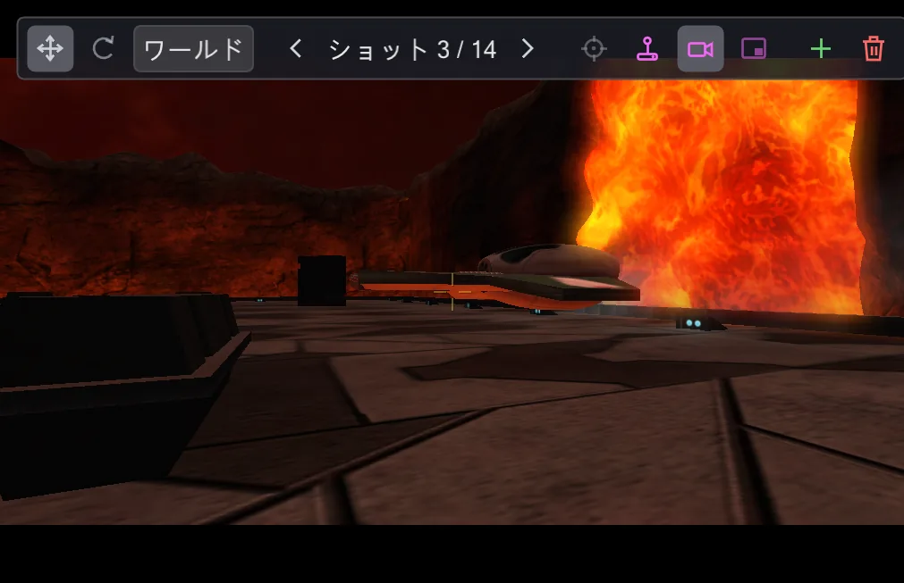
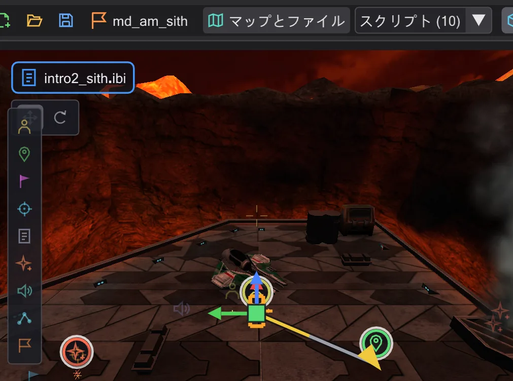
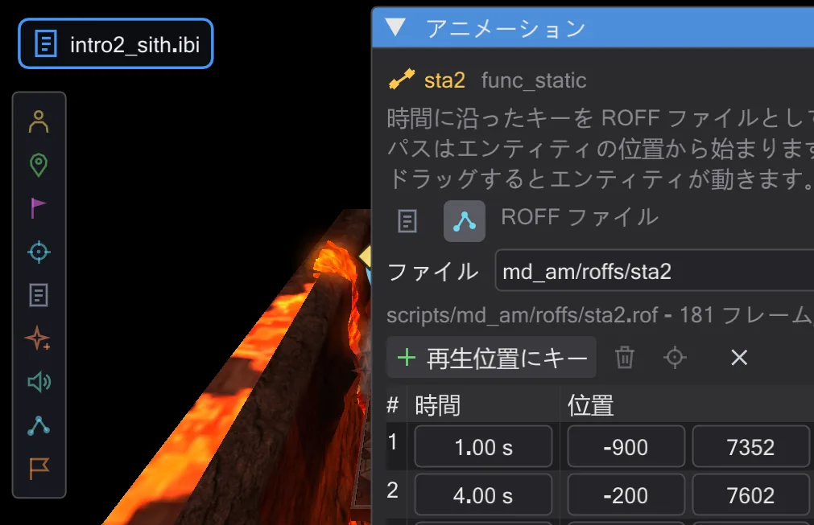
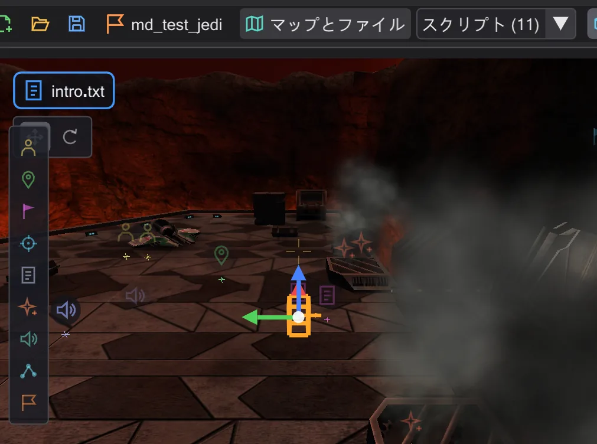

チュートリアル
チュートリアル
各チュートリアルは 1 つの作業を最初のクリックから完成まで追い、各ステップに画像があります。作りたいもので選んでください。

はじめてのカットシーン
2 つのカメラショットとその間のなめらかな移動を作り、カメラ視点で確認して、ゲーム用にコンパイルします。

キャラクターを歩かせる
キャラクターと歩行目標を置き、スクリプトでそこへ向かわせ、マップ上で道を変えます。歩く/走る、途中の点。

船を ROFF のパスで飛ばす
アリーナ上空を曲がりながら飛ぶ船の自由飛行を ROFF ファイルとして作り、ギズモで回転させ、ゲーム用に保存します。

自分のミッション
空のマップからゲームが読み込めるミッションまで。作成し、イントロを加え、チェックして .pk3 にまとめます。
画面と一致するよう、チュートリアルでは Movie Duels(MD_Missions_Ep3.pk3 の md_am_sith)を使います。他のミッションでも手順は同じです。ウィンドウの各部分に慣れていなければ、先に ウィンドウ と 視点の操作 をお読みください。